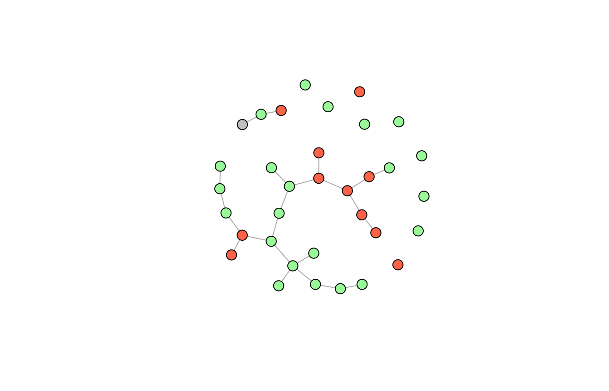
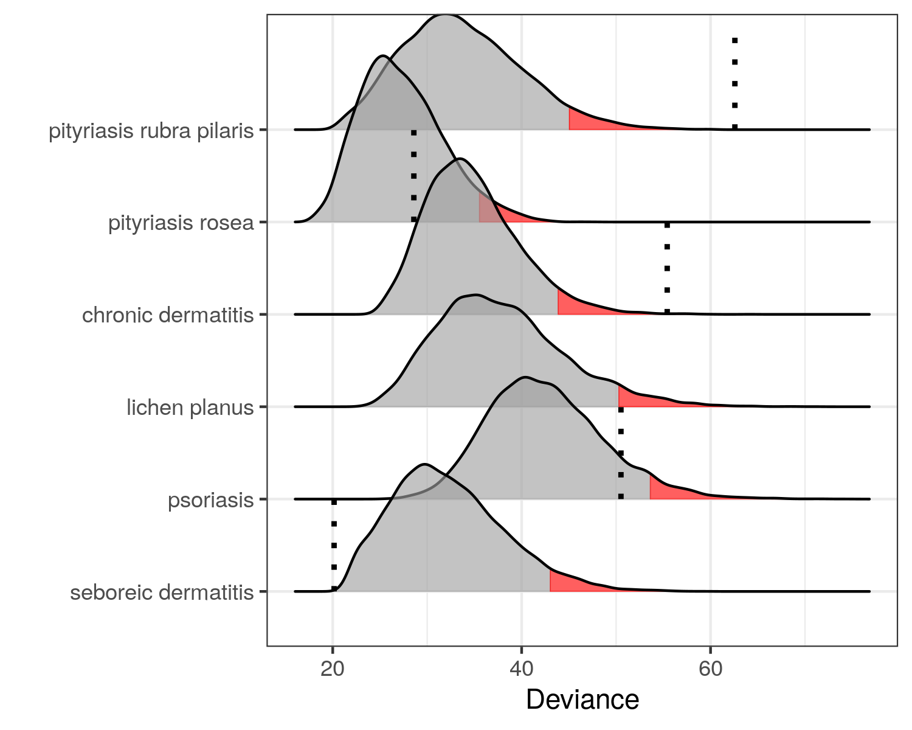

The UCI data set (Ilter and Altay Güvenir 1998) consist of
and a class variable with six different skin diseases
Many of the classical machine learning algorithms have been applied to the dataset (Liu et al. 2015). They all achieve a prediction accuracy above \(95\%\) and some even above \(99\%\). But…:
Given a new patient \(y\), we want to test the hypotheses
\[\begin{align*} H_1: & y \text{ has psoriasis} \\ H_2: & y \text{ has seborrheic dermatitis} \\ H_3: & y \text{ has lichen planus} \\ H_4: & y \text{ has pityriasis rosea} \\ H_5: & y \text{ has chronic dermatitis} \\ H_6: & y \text{ has pityriasis rubra pilaris} \end{align*}\]Since all hypotheses are exclusive we do not correct for multiple hypothesis testing (but the user can do this by setting the significance level accordingly).
We first show how to test \(H_1\). First extract the psoriasis data:
library(dplyr) library(molic) y <- unlist(derma[80, -35]) # a patient with seboreic dermatitis psor <- derma %>% filter(ES == "psoriasis") %>% dplyr::select(-ES)
Next, we fit the interaction graph for the psoriasis patients:
We can color the nodes corresponding to clinical attributes (red), histopathological attributes (green) and the age variable (gray):
vs <- names(adj_lst(g)) vcol <- structure(vector("character", length(vs)), names = vs) vcol[grepl("c", vs)] <- "tomato" # clinical attributes vcol[grepl("h", vs)] <- "#98FB98" # histopathological attributes vcol["age"] <- "gray" # age variable
plot(g, vcol, vertex.size = 10, vertex.label = NA)

The take home message here is, that we cannot assume independence between the attributes for the psoriasis patient as seen in the interaction graph - there are many associations.
set.seed(300718) m <- fit_outlier(psor, g, y) print(m)
--------------------------------
Simulations: 10000
Variables: 34
Observations: 112
Estimated mean: 42.66
Estimated variance: 37.55
--------------------------------
Critical value: 53.86771
Deviance: 50.51582
P-value: 0.1053
Alpha: 0.05
<novelty, outlier_model, list>
--------------------------------Notice that that the number of observations is \(112\) even though we have only observed \(111\) psoriasis patients. This is because, under the hypothesis, \(H_1\), the new observation \(y\) has psoriasis. The other summary statistics is self explanatory.
plot(m)
The red area is the critical region (here 5%) and the dotted line is the observed test statistic (the deviance) of \(y\). Since the dotted line is outside the critical region, we cannot reject that \(y\) has psoriasis.
We can use the fit_multiple_models function to test all six hypothesis as follows.
set.seed(300718) mm <- fit_multiple_models(derma, y, "ES", q = 0,trace = FALSE) plot(mm)

Thus, we cannot reject that \(y\) has either psoriasis, seboreic dermatitis or pityriasis rosea. This is conservative compared to classification methods and hence a little safer. The medical expert should proceed the investigation from here.
Ilter, and H. Altay Güvenir. 1998. “UCI Machine Learning Repository.” Department of Computer Engineering; Information Science. https://archive.ics.uci.edu/ml/datasets/Dermatology.
Liu, Tong, Liang Hu, Chao Ma, Zhi-Yan Wang, and Hui-Ling Chen. 2015. “A Fast Approach for Detection of Erythemato-Squamous Diseases Based on Extreme Learning Machine with Maximum Relevance Minimum Redundancy Feature Selection.” International Journal of Systems Science 46 (5). Taylor & Francis: 919–31.